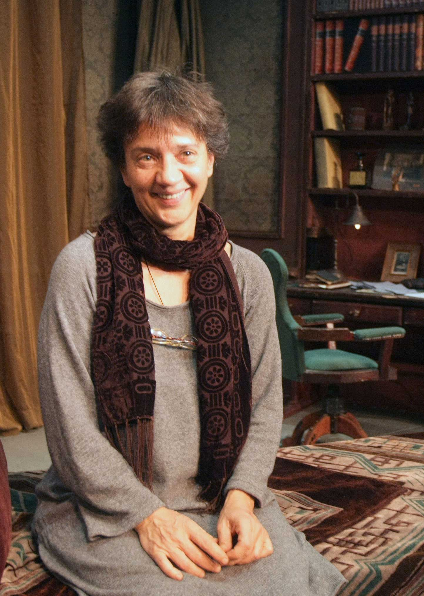

Director
IVANA DIMIĆ / Playwright and novelist
 She was born on July 30 in 1957. Belgrade. She graduated dramaturgy at the Faculty of Drama Arts in Belgrade in 1982. Parallel Studied at the Department of General Literature and literary theory at the Faculty of Philology. She completed post-graduate studies at the CEU (European University Centre) in Nancy (France) at the Department of Civilization 1984/85. Passed the examination for employees in the state administration 2008th so. State exam.
From 1 January in 1978. Was a freelance artist in the Association of Dramatic Artists of Serbia. Since 1986. Till in 1996. Was employed at the Atelier 212 in place of the first dramaturg. Than in 1996. Return to the status of independent artist. From January to June, 200.1 was the deputy director of drama at the National Theatre in Belgrade. Than in November 2000. Till 2002nd is a member of the Board of theater Bosko fleas. Since March in 2001. Serbian member of the literary society. From December 2002nd to 2004th member of Bitef. Since June 2004th to 2006th member World Fest. From May 2005th is Chairman of the Board of the Belgrade Drama Theatre. From january 2005. Acquired the status of a distinguished artist of the Association of Dramatic Artists of Serbia. From 1 juna 2006. Employed as Dramgurga in theater Bosko fleas. From 24 maja 2007. Till 28 August 2008. Deputy Minister of Culture of the Government V.Brajovića V. Kostunica, for creativity, cultural industries and cultural relations. Since August 2008. Repeatedly employed as a Playwright Theatre Bosko fleas. Since January 2009. Jury member for the award of Theatre of Belgrade. From decembra 2009. Chairman of the Board of the Belgrade City Library. From 1 February 2010th to maja 2011. Drama director of the National Theatre in Belgrade. From May 1, 2011th playwright of the National Theatre in Belgrade. V.D.Direktor Atelier 212 by 19 novembra 2012.
She has published five books of prose, more drama, more dramatized and adapted for the theater, three television series, several translations from English and French and was dramaturg on a number of theater productions. Published books of prose: "Black Green" short stories (education, 1995), "Mahorka, ink and husband" a short story (education., 1998), "Taking Time" short story (education, 2001), "Is anyone there? «short stories (education 2006).," list property "short story (Profile, 2009).
Anthology: "Small Box" anthology of short stories by Mihajlo Pantic, an anthology of short stories in English, Serbian "The man who ate death" edited by M. Pantic, an anthology of "21 for 21" hosted Vasa Pavkovic, Agora, 2011, "National Debt," a collection of short stories about Andric, 2012, Laguna.
Fiction drama, "Before the Mirror" r. Z. Ratkovic, Atelier 212, 1986, "Cinderella" Little Theatre D.Radović 1989, "White Angle" (published) journal Literature 1-2, 1998, "Golja« r. J. Radivojevic Theatre T, 2001, "Snow fairy tale," Flea B., 2004, "Mischief Makers" B.Buha, 2007a.
Dramatization: "Cabaret" a dramatization of poetry M.Bećkovića for theater, performed in 1983, "Beautiful Vasilisa" dramatized fairy tale performed on the radio in 1984, "Phone Brigade" dramatization text B.Crnčevića for theater, performed l992. in theater D.Radović, "bait" a dramatization of the novel D.Albaharija, performed at the National Theatre in Belgrade, 1998 dramatization of short stories for Drama Program RTS: Kafka, Gogol, Chekhov, Harms, Remizova, Calvin 2004, "Gypsies are flying in the sky "M.Gorkog, r. V. Lazic, T Theatre in 2004, "Peter Pan", Bari M, r. M. Karadzic B.Buha, 2010th
Translations from English - Drama: "Behind the Scenes" M. Frain, 1992, Atelier 212, directed by Alisa Stojanovic, "Master Class" T.Mek Neli, 1996 Bitef t. Directed by Alisa Stojanovic, "Popcorn" B.Elton 1998, National p. Directed by Dusan Petrovic »In search of times past" H.Pinter and Di Trevis, 2000, National Pos
(not done), "When the dolphins fly" N. Coward 2002, Krusevac Theatre, r. Lj. Draškić, "Pockets full of stones" M.Džouns 2003, Atelier 212, directed by E. Kadi, "The Iron life" Rona Munro, 2005th GDP, directed Ž.Tomić, "Rock and Roll" Tom Stoppard, 2006th GDP, "Spring Awakening , "Wedekind / S.Sater musical, 2010th GDP, r. N. Bradic, "Year of magical opinion," Joan Didion, monodrama 2010th
Romani: "First Ladies' detetktivska agency" Roman of A.Makol Smith, published 2004th in Samizdat B92, "giraffe tears" novel by A. McCall Smith, published in 2004 in Samizdat B92, "To die in Chicago," a novel by N. Tesic published in the Official Gazette, 2012. Uploaded with D.Babićem
Theoretical texts, "The development of psychoanalysis in Russia since 1919th until 1930," the journal of theory, god in 1981. (Translated from French)
»What are the desires of politically important," B. Russell Bridges 141-2, January 2008. (Translated from English)
Translated from the French - the drama, "Rabagas" by V. Sradua, 1987, the Atelier 212, not made, "childish" by R. Kusa, in 1996. Bitef t. Directed by D. Petrovic, "Masakrarije" from E.Joneska, published in "The entire work of Eugène Ionesco," Paidea, 1996, "Three Versions of Life" by J. Reza, Atelier 212, directed by Alisa Stojanovic, 2001, Discussion of Marivaux the Yugoslav Drama theater, 2009, terns, Viktor Lana, for Zvezdara Theatre, 2012 (Victor Lanoux »Le Tourniquet")
For television: "The Theatre Dictionary" series of scenarios of eight episodes directed by S.Božinovića broadcast on RTS in 1989. (Length episodes of 30 minutes).
"Vuk video primer" series of scenarios of thirty episodes directed by M.Karadžića aired on TV Studio B in 1992. (Length episodes of 30 minutes).
»House to the imagination" - scenarios for the ten-minute feature articles for the show on RTS directed by M. Milojevic for a period of ten years (from 1987 - 1997), about 300 episodes, "Theatre in the house" a remake of 26 episodes, the RTS, 2006-2007, "My cousin from the countryside," playwright, episode 13, the RTS, 2007a.
Playwright on the performance (adaptation / bar): Audience and Vernissage, 1981. Atelier 212 Director Lj. Draškić writer V. Havel, Kosančićev wreath 7, 1982. Atelier 212 directed by Z. Ratkovic, writer S.Selenić, Matrijalisti, 1982. Atelier 212 directed by Lj. Draškić writer Čudić, Woyzeck, 1982, Brewer, directed by S. Kapic writer Ambassador Buchner, 1982, Atelier 212 directed by Lj. Draškić writer Mrozek, Mary struggles with angels, 1984.Atelje 212 directed by Lj. Draškić writer Kohout, The Life and Adventures of soldiers I Čonkina 1984, Atelier 212, directed Z.Ratković, Heron, 1985, Atelier 212, r. D. Mijač Writer Aksjonov, St. George Shoots the Dragon 1986, Atelier 212, r. Lj. Draškić writer D.Kovačević, poor little hamster in 1987. Atelier 212 directed by A. Gavrilovic, writer Mihic, fear of the border in 1987, Atelier 212 directed by Eduard Miler, T.Man the writer, Boris Godunov, 1988, directed by Atelier 212 Z.Ratković writer Pushkin, adaptation, do not go up any goals in 1989 , Atelier 212 directed by Z. Ratkovic, writer Feydeau Miloduh, 1989, directed by Atelier 212 P. Teslic P.Šefer writer, lawyer Pierre Patlen, 1990, directed by Atelier 212 Z. Dori, author unknown, trails wildlife, 1991, directed by Atelier 212 Alisa Stojanovic unit springs, Zabar, 1991, directed by Atelier 212 Gorčin Stojanovic, writer Fassbinder, Filumena Marturano, 1993, Atelier 212 directed by Branko dance, E.de writer Philip, The School for Wives, 1994, Atelier 212 by Zoran Ratkovic, writer Moliere , Moscow Petushki, 1995, Atelier 212 directed by Predrag Bajčetić writer Jerofejev, tour, 1996, Atelier 212 directed by Milan Karadzic, writer G.Marković, Don Juan, 1997, Kruševačko calls. Directed by M. Karadzic, writer Moliere, love of George Washington, in 1997. Atelier 212, r. Tatjana Mandic Rigonat writer M. Raven, Pop Cira i pop Spira, 1997, directed by M. SNP Karadzic, writer S.Sremac Rivals, 1997, Belgrade Drama p. Directed by M. Karadzic, writer Sheridan, Tartuffe, 1997, the National Theatre directed by Laszlo Babarci writer Moliere, Voice mana, 1998, National Pos. Directed by M. Karadzic, writer G.Marković, The Bald Soprano, 1998.Kruševačko p. Directed Jagoš Markovic, writer Ionesco Perison, 1998 Kruševačko calls. Directed by M. Karadzic, writer Labis, Oliver Twist, 1998, directed by Bosko Flea Nebojsa Bradic writer Dickens, Pepo or rebellion of angels, 1998 SNP directed by Laslo Babarci, writer A. Szilagyi, Cyanide at Five 1998, National Pos. Directed by Bozidar Djurovic, writer Kohout, The Emperor Trojan has goat's ears, in 1999. calls. Bosko Flea, r. M. Karadzic writer Lj. Ršumović, Bishop Nikolai, 1999, the theater Cult Director Nenad Ilic, original texts, only you Listen, in 1999, the Belgrade Drama Pos., Directed by M. Karadzic, writer M. Karadzic, Maksim Crnojević, 2000, National Pos. Directed by Nikita Milivojevic, writer L. Kostic, entertainer, 2000th, Atelier 212 rEKadić writer F. Kusz pianist, in 2000, Atelier 212, rEKadić Writer Bariko, Hasanaginica 2001, the National Theatre Director Jagoš Markovic, Lj writer. Simovic, Pandora's Box, 2002, Belgrade Drama Pos. writer and directed by Goran Marković, The Taming of the Shrew, 2002, Low folk p. Directed by M. Karadzic, the writer Shakespeare, Destiny and comments, 2002, National Pos. Directed by Alisa Stojanovic, writer Petkovic Meeting 2002, Yugoslav Drama p. Directed j.markovic writer Držić, adaptation, Unrewarded Love's Labour's 2002, Zeta House, Cetinje, directed by M. Karadzic, the writer Shakespeare, Exhibitionist, 2003, directed by Atelier 212 M. Karadzic, Mr. D.Jovanovic writer, Frederick, in 2003 GDP , r. M. Karadzic, writer Schmidt, Look at the sky, 2003, Novi, r.Lj.Todorović writer D. Her, Pinocchio, B. Flea 2003. R. M. Karadzic writer K. Collodi, Villa Sachin G. Markovic, GDP 2004th r. M. Karadzic, Oscar and Mama Rose, the GDP in 2004, r. N.Bradić Writer Schmidt, Tre sora, 2004th Zvezdara theater r. M. Karadzic, the writer S. Koprivica, Snow White and the Seven Dwarfs, Lj.Ršumović B.Buha, 2005th r. M. Karadzic small death trilogy 2005th GDP N.Bradić Director, writer E. Jelinek, an adaptation of The Taming of the Shrew, Shakespeare, B. Flea 2006th r. M. Karadzic, Alisa, L.Kerol, B.Buha, 2006th r.Marija Milenkovic adaptation, Two Gentlemen of Verona, Shakespeare, B.Buha 2006th directed G.Šušljik, Transylvania, D.Nikolić, 2006th GDP directed by M . Karadzic, Othello, Shakespeare, 2006th B.Buha, r.Jovan Grujic, Twelfth Night, Shakespeare, 2006th B.Buha directed by Bojana Lazic, Cinderella, I. Bojovic 2006th B.Buha directed by M. Karadzic Decameron, Boccaccio 2006th B.Buha, landlady Mirandolina, Goldoni,
2006th B.Buha, directed by South Radivojevic, light cavalry, Jančar, 2007a. BDP, directed by Milan Karadzic, Translations, Brian Friel, 2009th JDP, directed by Dejan Mijač, The Little Mermaid, Razumovska, 2009th B.Buha, directed by Milan Karadzic , The Golden Calf, Iljif and Petrov, 2010th National poz.režija G. Markovic, scenes of execution, H.Barker, 2010th National Pos. Directed by M. Manojlovic, Misys Tolstoy, S.Kokovkin, 2011. National Pos. Directed R.Milenković, Doctor D, Markovic G., 2012. BDP. Directed by G. Markovic, Secret Greta Garbo, Madlenijanum, 2012, directed by Durda Tesic, The Glass Menagerie, T. Williams, 2012, National Pos. Directed by R. Milenkovic, Henry VI, Part, Shakespeare, 2012. National Pos-Glob, brežija N.Milivojević, Behind the Scenes, M.Frejn, 2012. B.Buha, directed by South Radivojevic, The Bourgeois Gentleman, Moliere, 2012, directed by D. Mihajlovic, poz.Kosovske Mitrovica (adaptation), Women's Orchestra, Anuj, 2012. directed
South Radivojevic, National Theatre (adaptation Dimic / Radivojevic, SONG I.Dimić)
Awards:
Tiba Festival Award for best play for "Mischief Makers"2011th Golden Chain Award for lasting contribution to culture
2012th Annual Award of the National Theatre in the play Henry VI and Women's Orchestra